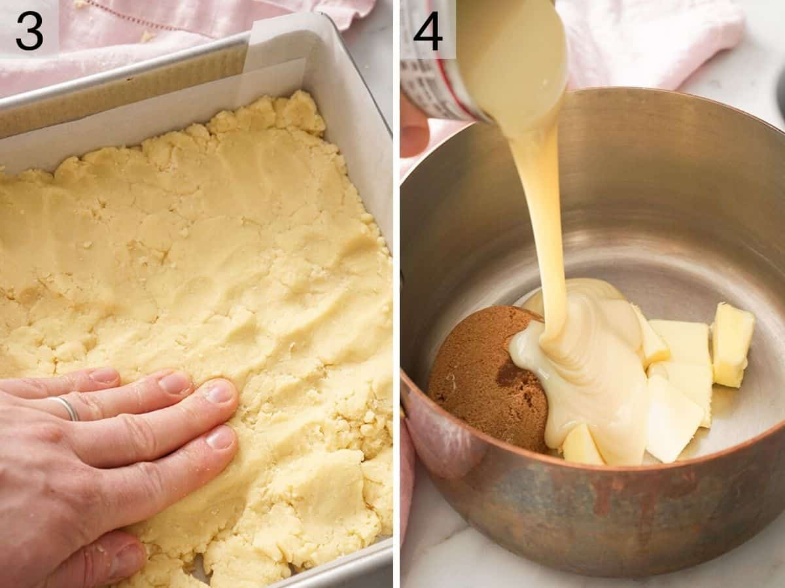
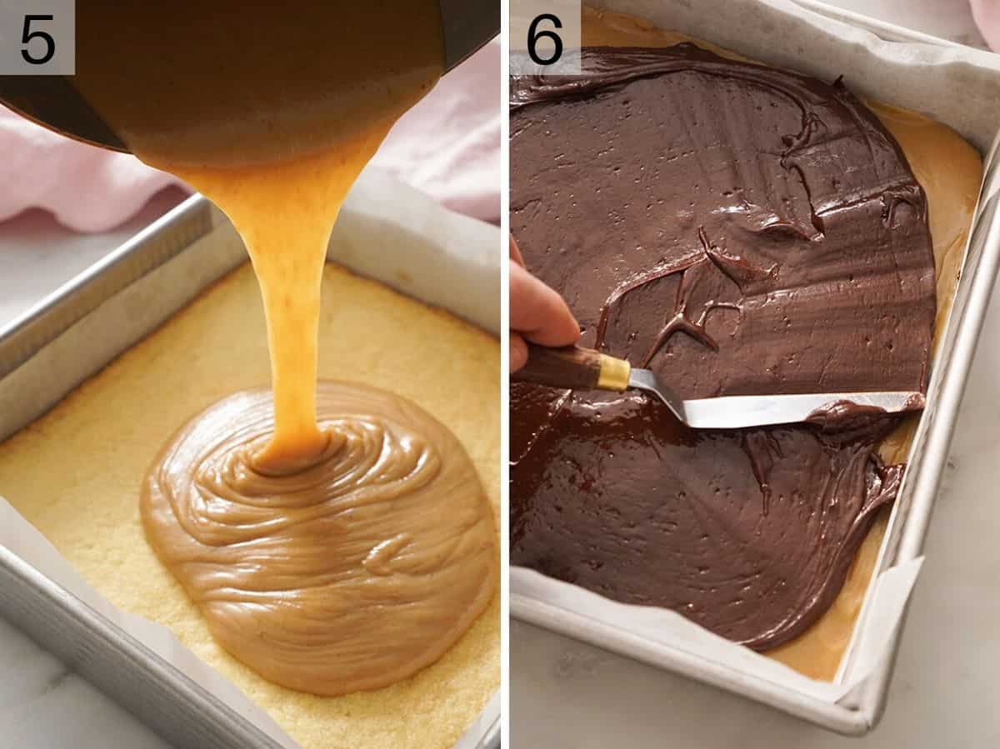
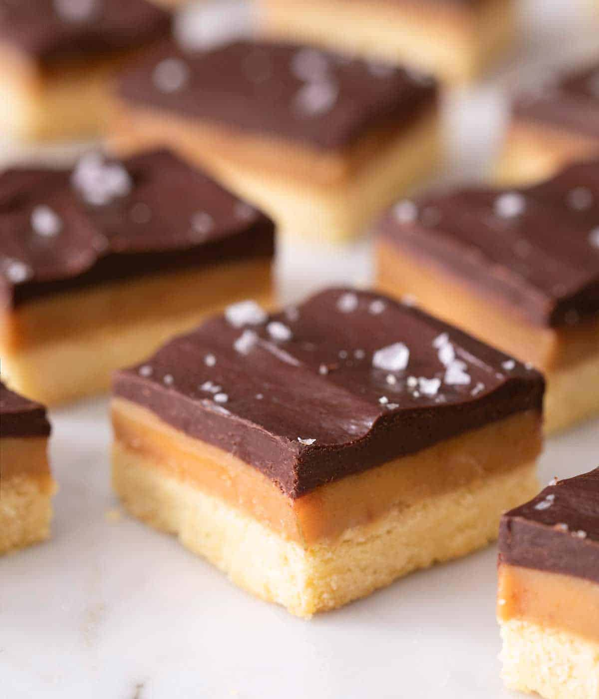

.webp) Jump to recipe
Jump to recipe
This post may contain affiliate links. Please read our disclosure policy.
How to make Millionaire's Shortbread! Rich caramel bars made with three layers of crispy and buttery shortbread, thick caramel, and chocolate ganache sprinkled with sea salt flakes. Made with basic pantry ingredients they're super easy to make and impossible to resist.
Chocolate, caramel, and shortbread, it’s a pretty incredible combination that totally lives up to its name, I mean, I don’t know anyone who can resist a square of Millionaire’s shortbread. I love to use semi-sweet chocolate for a slightly bitter and richer flavor and top them with sea salt flakes which makes them extra delicious, hello salted caramel!
There are no fancy ingredients involved so they’re super easy to make and will keep well for a few days or can be frozen making them a great prep-ahead treat. For more chocolate and caramel treats check out my Carmelitas and Toffee recipes they’re so delicious!
Butter – I use unsalted butter because additional salt is added, make sure your butter is at room temperature.
Condensed milk – sweetened condensed milk is a key ingredient for making a super sweet, thick, and delicious caramel!
Sugar – I use a mix of both granulated white sugar and brown sugar which gives a delicious caramel/molasses flavor.
Chocolate – Millionaire’s shortbread is really rich so I like to use a less sweet tasting chocolate like semi-sweet or bitter-sweet. You can use good-quality chocolate chips for ease or chop up a good quality chocolate bar.
1. Cream the butter, sugar, and salt together then add the egg and vanilla.
2. Add the flour in batches and stir to combine.
3. Pat the shortbread into a lined baking dish and bake.
4. Meanwhile, make the caramel by adding butter, condensed milk, and sugar to a saucepan and heat until darkened and thick.
5. Pour the caramel over the shortbread layer and chill.
6. Make the chocolate ganache by adding the chocolate and cream to a bowl over a double boiler or microwave and melt. Spread over the chilled caramel and shortbread base and sprinkle with sea salt. Chill in the fridge until your millionaire’s shortbread is set.

Your caramel needs to reach a minimum of 224F to set so if you undercook it you’ll run into issues. A sugar thermometer makes things super easy here but if you don’t have one make sure the caramel starts to pull away from the edges of the pan and is really thick before removing it from the heat.
The best way to change up millionaire’s shortbread is to experiment with different chocolate on top. Why not try swirling in some white melted chocolate which will create a fun pattern too! Check out my Scotcheroos, Pecan Pie Bars, or Peanut Butter Bars for something a little different.
Store the squares in an airtight container there’s no need to refrigerate. They’ll keep well for up to 5 days.
Yes, millionaire’s shortbread freeze really well but make sure to wrap them tightly in plastic wrap or foil and freeze them individually. Thaw them completely before serving.
Rich and decadent Millionaire's Shortbread caramel squares. Don't forget to check out my step by step photos and tips above!
PREP TIME: 10 MINS
COOK TIME: 50 MINS
TOTAL TIME: 1 HOUR
1. Preheat oven to 350F and line a 9x9 inch baking dish with parchment paper or foil.
2. Cream the butter then add the sugar, salt and beat until light and fluffy. Add the vanilla and egg yolk then mix until combined. Add the flour in a few batches and mix until just combined.
3. Transfer to your prepared pan and press into an even layer then bake at 350F for about 22 minutes or until the edges are golden.
4. While the base bakes make the caramel. This is easiest with a candy thermometer but you don't need one. Combine the butter, brown sugar, salt, vanilla, sweetened condensed milk and either golden syrup or corn syrup.
5. Place over medium heat and whisk until melted and combined then continue whisking over the heat while the caramel bubbles and dakens to a richer color. Once it reaches 225F you'll see it starts to thicken and pull away from the edge, 5-6 minutes, your caramel is ready.
6. Pour onto the shortbread base, smooth to the edges creating a flat layer. Chill for about 10 minutes so the caramel sets.
7. Chop chocolate and melt with cream either in a double boiler or be microwaving in 2-3 20 second bursts, stirring in between. Pour the chocolate over the caramel and smooth into an even layer. Sprinkle with salt if desired then chill and cut into pieces.